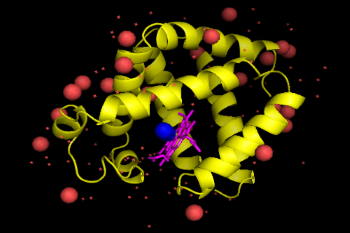
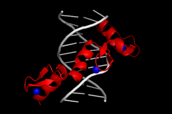

Chymotrypsin is a digestive enzyme belonging to the family of serine proteases.
It is first synthesized in the pancreas as an inactive precursor chymotrypsinogen which becomes activated upon trypsin cleavage of peptide bonds.
Chymotrypsin also uses its serine residues to perform hydrolysis on the C-terminus of aromatic amino acids of other proteins.
Myoglobin

Myoglobin is a protein that binds oxygen in the haem group of muscle cells. Myoglobin contains a porphyrin ring with an iron at its centre. A proximal histidine group (His-93) is attached directly to iron, and a distal histidine group (His-64) hovers near the opposite face. The distal imidazole is not bonded to the iron but is available to interact with the substrate O2.
Zinc Finger DNA

Zinc-finger DNA protein is small proteins that are stabilized by the zinc ion. Present mostly as transcription factors in the body they are found to be very important in controlling apoptosis. These proteins can also be used to target oncogenes and therefore inhibit carcinogenesis.